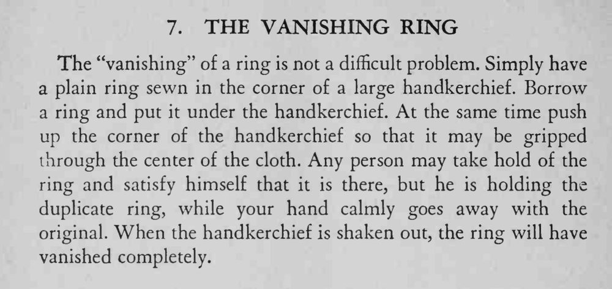

借来的戒指被包进手帕，观众隔着布还能捏到它；手帕一抖开，戒指已经消失得无影无踪。
缝在手帕角的环要够厚，隔着布捏起来才像借来的那只。

The "vanishing" of a ring is not a difficult problem. Simply have a plain ring sewn in the corner of a large handkerchief. Borrow a ring and put it under the handkerchief. At the same time push up the corner of the handkerchief so that it may be gripped through the center of the cloth. Any person may take hold of the ring and satisfy himself that it is there, but he is holding the duplicate ring, while your hand calmly goes away with the original. When the handkerchief is shaken out, the ring will have vanished completely.